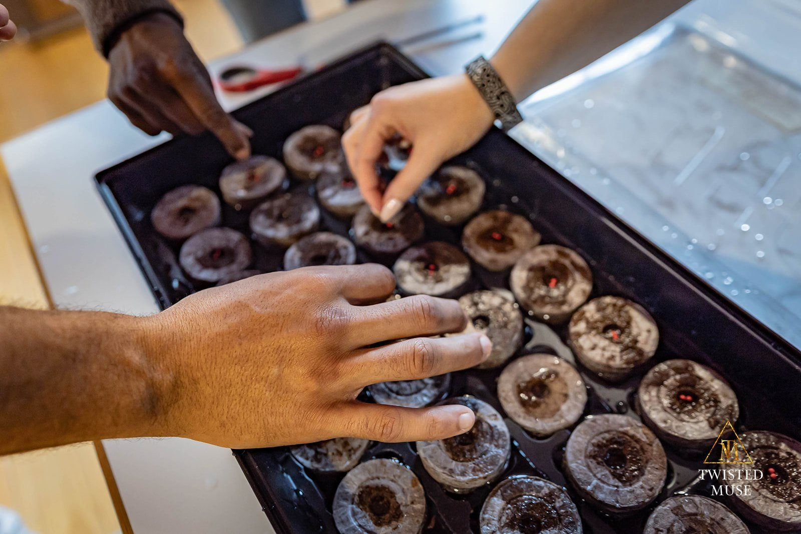

Practice becomes a story we can live.
Heroic Yogi is the common developmental foundation of Senses Yoga School: embodied practice, contemplative study, story, consciousness, self-inquiry, discipline, and service.
This page is not meant to read like a static course catalog. It grows as the practice grows. Reflections from the Heroic Yogi journal, images from the field, and lessons from community practice will continue to enter this space over time.
Read the continuing Heroic Yogi journal on Patreon →
The body is not separate from the path. It is where the path becomes visible.
Heroic Yogi · Senses Yoga School · living practice reflection
Learning moves between body, story, reflection, and responsibility.
Practice
Embodied disciplines and living practice resources.
Study
Philosophy, story, consciousness, and inquiry.
Language
Sanskrit seeds and careful engagement with key terms.
Reflection
Journals, observation, integration, and self-study.
Identity
Archetypal development and the learner's evolving story.
Service
Community stewardship and applied responsibility.
Discipline is not punishment. It is the shape devotion takes when we decide to return.
Heroic Yogi · practice journal
Continue reading on Patreon →
Tradition is encountered through practice.
Students meet yogic and Vedic thought through embodied inquiry. Texts, stories, Sanskrit seeds, archetypal images, contemplative arts, and philosophies of consciousness are studied alongside the realities of body, relationship, land, and service.
The school does not ask learners to abandon discernment. It asks them to deepen it.

What we cultivate inwardly has to learn how to live in relationship.
Heroic Yogi · service and stewardship reflection
Follow the ecological journal →There is no finished version of a living practice.
Heroic Yogi reflections will continue to appear throughout this site beside field notes, photographs, student pathways, community work, and the evolving schools of study. The archive should show not only what Senses Yoga School offers, but what it is learning.